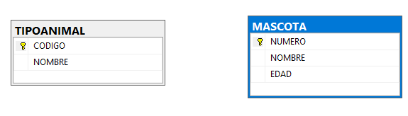
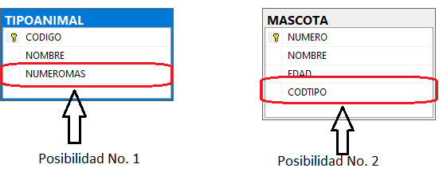
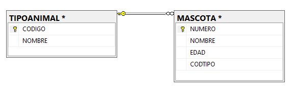
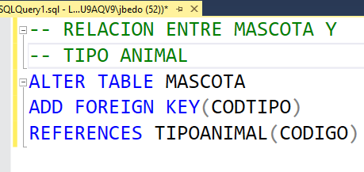
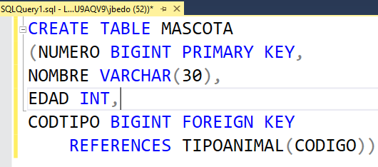

Para relacionar dos tablas en una base de datos hay que tener en consideración varios aspectos:
- Dos tablas se relacionan entre sí por campos en común.
- Qué son campos en común? Son campos que tienen el mismo significado y también el mismo tipo de datos. ES de aclarar que campos en común no son aquellos que tienen el mismo nombre.
- Si tenemos dos tablas que se deben relacionar, y éstas no tienen campos en común, debemos adicionarle a alguna de las dos tablas un nuevo campo, y dicho campo debe ser común a la clave primaria (PK) de la otra tabla con la que se va a relacionar.
- Este nuevo campo, el cual se relaciona con la PK de la otra tabla, se conoce como clave foránea (FK).
- Cómo saber a cuál de las dos tablas ponerle este nuevo campo? La regla de oro es que nunca una clave foránea puede ser multivalorado, es decir, este nuevo campo no puede ser multivalorado.
- El anterior aspecto es el que determina donde colocar la FK.
- Toda relación entre un par de tablas tiene una FK a un lado y una PK al otro lado.
Vamos a mirar los anteriores conceptos con un ejemplo.
|  |
Vamos a suponer dos tablas de un centro veterinario. La tabla llamada MASCOTA, con los datos de las mascotas atendidas en el centro. Y otra tabla llamada TIPOANIMAL que contiene la información de las tipos de animales y/o mascotas que se atienden en el centro. Son dos tablas que tienen que estar relacionadas entre sí, ya que una mascota es de un tipo de animal (perro, gato, canario, perico, etc.) y de un tipo de animal, pueden haber varias mascotas asociadas. |
|  |
Cuando miramos, en detalle las tablas, nos damos cuenta de que no tienen campos en común. Por lo tanto, debemos adicionarle a alguna de las dos tablas un nuevo campo, que sea común con la PK de la otra tabla. Por lo tanto, hay dos posibilidades, las cuales se ven en la imagen. La posibilidad No. 1 es colocar, en la tabla TIPOANIMAL, un nuevo campo referente al numero de mascota asociado. La posibilidad No. 2 es colocar, en la tabla MASCOTA, un nuevo campo referente al código del tipo de animal. |
|  |
Si analizamos la posibilidad No. 1, cada uno de los registros de la tabla TIPOANIMAL va a tener, en el campo nuevo NUMEROMAS, muchos valores. Esto debido a que de cada tipo de animal, pueden haber muchas mascotas asociadas. Por lo tanto, este nuevo campo sería multivalorado, lo cual no es correcto para una FK. En cambio, si analizamos la posibilidad No. 2, cada registro de la tabla MASCOTA, va a tener un solo código de tipo de animal, porque cada mascota corresponde a un solo tipo de animal. Por lo tanto, este campo solo va a tener un valor, y por lo tanto es la solución correcta. |
A continuación, se explica como es la relación entre tablas por modo comando.
|  | Como podemos observar en el comando, le estamos definiendo a la tabla MASCOTA una clave foránea, el campo CODTIPO, la cual se va a relacionar (o es común con) la PK de la tabla TIPOANIMAL, CODIGO. |
|  |
Tambien se puede definir la clave foranea en el momento de crear la tabla. El comando se muestra en la imagen de la izquierda. |
La manera de relacionar dos tablas por modo gráfico, es explicado en el siguiente ítem de Diagrama de la Base de Datos.